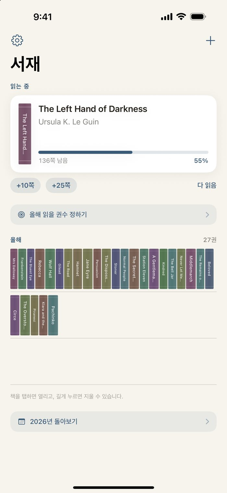

Bookspine · 가이드 · 日本語
지금 읽는 책을 iPhone 홈 화면에 두는 방법
독서 위젯이 있으면 읽다 만 책이 하루에도 몇 번씩 보는 곳에 있습니다. 표지, 어디까지 읽었는지, 남은 쪽수까지.
아래 앱으로 설정하는 방법을 소개합니다: Bookspine. 작은 위젯은 무료입니다.
1. 지금 읽는 책 추가하기
- Bookspine을 열고 다음을 누르세요: +.
- 제목이나 작가로 검색하거나 뒤표지의 바코드를 스캔하세요. 제목, 작가, 표지가 자동으로 채워집니다.
- 책은 “읽는 중”에 들어갑니다.

바코드가 없거나 검색 결과가 없나요? 직접 입력해서 추가하세요. 제목만 있으면 됩니다.
2. 위젯을 홈 화면에 두기
- 홈 화면의 빈 곳을 앱이 흔들릴 때까지 길게 누르세요.
- 위쪽 모서리의 “편집” (또는 +)을 누른 다음 검색하세요: “Bookspine”.
- 작은 크기를 고른 뒤 “위젯 추가”를 누르세요.

3. 위젯에서 바로 쪽수 추가하기
“+10쪽” 버튼을 읽으면서 위젯에서 누르세요. 앱을 열 필요가 없습니다. 마지막 쪽까지 읽으면 책이 다 읽음으로 표시되고 서재로 옮겨집니다.
홈 화면에 더 두고 싶다면?
Bookspine Pro(구독이 아닌 한 번만 구매)로:
- 중형: 표지, 진행 막대, 남은 쪽수, 올해 읽은 권수
- 대형: 올해의 서재 — 다 읽은 책이 모두 나란히
- 잠금 화면: 잠금을 풀지 않고 진행률 확인
질문
독서 위젯은 무료인가요?네. 작은 위젯(지금 읽는 책, 표지나 책등, 어디까지 읽었는지)은 무료이며, 광고도 계정도 없습니다. 중형·대형 위젯과 잠금 화면 위젯은 한 번만 구매하는 Bookspine Pro에 포함됩니다.
두 권을 동시에 읽고 있어요. 어느 책이 나오나요?작은 위젯에는 가장 최근에 읽기 시작한 책이 나옵니다.
쪽수가 없는 책은요?그래도 추가할 수 있습니다. 제목만 있으면 됩니다. 이때 진행률은 퍼센트로 기록되고, 위젯을 한 번 탭할 때마다 5%씩 늘어납니다.
마지막 쪽까지 읽으면 어떻게 되나요?책이 다 읽음으로 표시되고 서재로 옮겨집니다. 서재에는 다 읽은 책이 읽은 순서대로 나란히 꽂힙니다.
App Store에서 Bookspine 받기
구독 없음, 광고 없음, 계정 없음. · Bookspine 소개
English · 日本語 · 한국어 · Deutsch · Español